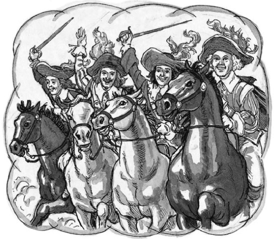

D’Artagnan đang nói chuyện với Nhà vua ở Nantes.
‘Thưa điện hạ, người muốn thần giết chết bạn bè của mình,’ viên lính ngự lâm giận dữ nói. ‘Đó là sai lầm!’
‘Nhưng những người đàn ông đó đã giam ta vào ngục Bastille, D’Artagnan thân mến của ta,’ Nhà vua nói. ‘Ngươi đã quên rồi sao?’
Lúc đó, một viên sĩ quan bước vào phòng với một bức thư cho Nhà vua. Nhà vua đọc thư, rồi nhìn D’Artagnan.
‘Thưa Ngài,’ Nhà vua nói. ‘Đã diễn ra một trận chiến ở Belle-Isle. Quân lính của ta đã chiếm được hòn đảo.’
‘Bạn bè thần thì sao, thưa điện hạ?’ D’Artagnan hỏi Nhà vua.
‘Họ đã rời khỏi hòn đảo trên một chiếc thuyền nhỏ,’ Nhà vua trả lời. ‘Ngươi đang giận ta, D’Artagnan. Nhưng ngươi là một người tốt. Ngươi đã từ chức khỏi đội lính ngự lâm của ta. Ta muốn ngươi xem xét lại.’
‘Thần đang nghĩ đến những người dân ở Belle-Isle,’ D’Artagnan đáp. ‘Họ cũng là những người tốt!’
‘Ngươi có muốn ta thả họ không?’ Nhà vua hỏi.
‘Thần muốn như vậy, thưa điện hạ,’ D’Artagnan đáp.
‘Được thôi,’ Nhà vua nói. ‘Đi ngay bây giờ. Hãy nói với họ rằng: “Nhà vua đã nhân từ. Các ngươi được tự do.” Nhưng ngươi phải đi nhanh lên. Ngày mai, ta sẽ đến Paris, và ta muốn ngươi đi cùng ta. Ngày mai, ngươi sẽ lại là đội trưởng đội lính ngự lâm của ta.’
D’Artagnan nhanh chóng tới Belle-Isle, nhưng ông không biết tin tức gì về những người bạn của mình. Ông thấy nhiều binh lính chết trong hang động. Ông thấy một số tảng đá lớn gần cửa hang. Chúng đã rơi từ trên mái xuống. Ông cũng nghe thấy một câu chuyện về một chiếc thuyền nhỏ. Những người dân đảo đã nhìn thấy nó đang chèo về phía Tây Ban Nha.
Ngày hôm sau, D’Artagnan đi đến Paris cùng Vua Louis. Nhưng ở Paris, D’Artagnan nhận được tin dữ.
‘Thưa điện hạ, người bạn Porthos của thần đã chết,’ D’Artagnan nói với Nhà vua. ‘Ông ấy đã chết ở Belle-Isle. Nhưng Aramis đã trốn thoát.’
‘Ta đã biết điều đó, D’Artagnan,’ Nhà vua nói một cách bình tĩnh.
‘Người đã biết nhưng không nói với thần sao?’ D’Artagnan hỏi.
‘Đúng vậy,’ Nhà vua nói. ‘Porthos đã bị một tảng đá giết chết ở Locmaria. Và Giám mục Vannes đã trốn thoát đến Tây Ban Nha trên một chiếc thuyền nhỏ.’
‘Nhưng thưa điện hạ, sao người biết được điều đó?’ D’Artagnan hỏi.
‘Sao ngươi biết được điều đó, D’Artagnan?’ Nhà vua hỏi.
‘Thần có một bức thư từ Aramis, thưa điện hạ,’ D’Artagnan đáp. ‘Ông ấy đã viết cho thần từ Bayonne, gần Tây Ban Nha. Thần nhận được lá thư cách đây một giờ.’
Nhà vua lấy một tờ giấy từ một chiếc hộp trên bàn.
‘Đây là bản sao bức thư của Aramis,’ Nhà vua nói. ‘Ngài Colbert đã đưa nó cho ta cách đây tám tiếng. D’Artagnan, ta có thể đưa Aramis trở về Pháp. Nhưng ta sẽ không làm vậy. Ông ấy sẽ được tự do.’
‘Cảm ơn người, điện hạ!’ D’Artagnan lặng lẽ nói.
Đây là cuộc phiêu lưu cuối cùng của Bốn lính ngự lâm. Một năm sau, Athos qua đời tại nhà riêng ở Blois. Và ba năm sau đó, D’Artagnan cũng qua đời. Ông đã chiến đấu vì nhà vua, và ông đã hy sinh anh dũng. Những lời cuối cùng của ông như sau —
‘Athos, Porthos! Tôi sẽ sớm gặp lại các anh ở thiên đường. Tạm biệt, cho tới khi chúng ta gặp lại. Aramis, vĩnh biệt!’
Ba trong số Bốn lính ngự lâm đã chết. Không bao giờ họ có thể nói rằng: ‘Một vì tất cả, tất cả vì một!’
